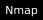
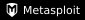
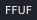
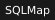
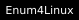
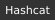
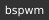
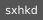

Sobre Mí
Soy un especialista en seguridad ofensiva centrado en penetration testing, operaciones de Red Team y bug bounty. Mi enfoque metodológico abarca el ciclo completo de intrusión: desde la enumeración exhaustiva de la superficie de ataque, hasta la explotación, escalada de privilegios y post-explotación en entornos complejos.
Arsenal y Entorno Operativo
Desarrollo y Automatización
Reconocimiento y Explotación Web




Active Directory & Post-Explotación


Infraestructura Táctica (Tiling & Low-Latency)
Mi entorno de auditoría está diseñado para la velocidad y el control absoluto mediante teclado:


Dominio Técnico
| Fase / Vector | Técnicas y Herramientas Destacadas |
|---|---|
| Web Application Security | XSS (Reflected/Stored/DOM), SQLi (Blind/Time-Based), Auth Bypass, IDOR, SSRF, CSRF. |
| Network & Wireless | PT Red Interna/Externa, Auditorías WPA/WPA2/WPS, AP Rogue, Passive OS Fingerprinting. |
| Directorio Activo | AS-REP Roasting, Kerberoasting, Pass-The-Hash, volcado de NTDS.dit, PrivEsc (Linux/Windows). |
| Metodología Ofensiva | OSINT pasivo, enumeración agresiva controlada, evasión de AV/EDR básica y persistencia. |
Certificaciones y Credenciales
Entrenamiento Continuo y CTFs
Mantener el filo táctico requiere práctica constante. Puedes seguir mi progresión en entornos de simulación y laboratorios de vulnerabilidades aquí:

Certificaciones y Logros
Un resumen de mis certificaciones y progresos en plataformas de ciberseguridad.
Basic Toolset
Completado
Linux Fundamentals
Completado
?
Próximo Reto
En progreso